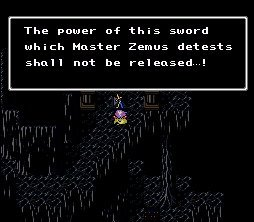
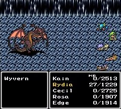
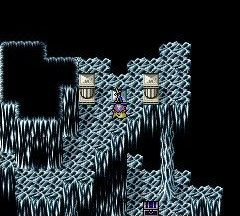
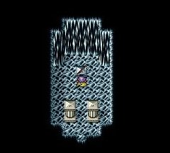
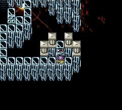
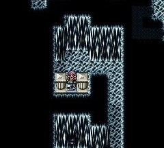
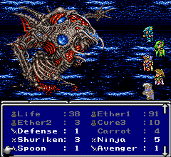
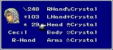

|
Equipment
อาวุธส่วนใหญ่ ที่หาได้จะเป็นอาวุธในตำนาน
แต่ก็มีอาวุธอื่นๆ ที่ดีกว่าอาวุธพวกนั้นอยู่ด้วย
Legend Weapon
อาวุธในตำนานหาได้จากใน Dungeon สุดท้าย
ซึ่งอาวุธเหล่านั้นจะอยู่บนแท่นที่ตั้ง

อีกทั้งยังมีศัตรูเฝ้าอยู่อีกด้วย

(Dark Bahamut สัตว์อสูรด้านมืด เริ่มมีในภาคนี้)
แต่เมื่อสามารถปราบมันได้ ก็จะได้อาวุธในตำนานมา
ซึ่งมีอยู่ทั้งหมด คือ
Crytal (Sword) Atk 200 (+1
def) Equip by Cecil

(เลื่อน mouse ไปบนรูป เพื่อดูศัตรูที่เฝ้าอาวุธแต่ละชิ้น)
มีศัตรูเฝ้าคือ Dark Bahamut
White (Lance) Atk 109 (Use
for Holy) Equip by Kain

(ศัตรูตัวนี้โจมตีโดยการจับเวลาตายทุกคนพร้อมกัน)
Masamune (Katana) Atk 65
Equip by Edge

(Dark Liviathan)
Murasame (Katana) Atk 56
(+2 def) Equip by Edge

(ศัตรูตัวนี้เป็นผู้เฝ้าดาบ Murasame)
Rare
นอกเหนือจากนี้แล้ว ยังมีอาวุธและเครื่องป้องกันที่ดีอีกหลายชิ้น เช่น
Weapon
- Stardust
(Rod) Atk 45 (Use for Comet)
- Silence (Staff) Atk 52
(Use for Mute) Equip by Rosa
Will (+10)
หาได้จาก การชนะConjurer ในถ้ำทางไปหมู่บ้านสัตว์อสูรในโลกใต้ดิน
- Dragon (Whip) Atk 56 (Adds
"Para," 2x hit on Dragons) Equip by Rydia
Strength (+5)
Agility (+5)
Vitality (+5)
Wisdom (-5)
Will (-5)
หาได้จาก การชนะ Blue Dragons บน Dungeon ในดวงจันทร์
- Atemis (Bow) Equip by
Cecil, Rydia, Rosa
Strength (+10)
Agility (+10)
Vitality (+10)
Wisdom (-10)
Will (-10)
หาได้จาก การชนะ Warlocks หรือ Karys บน Dungeon ในดวงจันทร์
- Atemis (Arrow) (4x hit
on Dragons)
หาได้จาก การชนะ Karys บน Dungeon ในดวงจันทร์
- Spoon (Dagger) Use With
"Throw" Command for 9,999 damage

หาได้จาก การทำ Quest ของ Yang
Head
- Glass (Helmet) Def 30
MDef 0 Equip by All
หาได้จาก การชนะ Evil Mask บนดวงจันทร์ใน Dungeon Moon's Core
Body
- Adamant (Armor) Def 108
MDef 20 Equip by All
Strength (+15)
Agility (+15)
Vitality (+15)
Wisdom (+15)
Will (+15)
หาได้จาก PinkPuff
- Heroine (Armor) Def 28
MDef 5 (Strong Vs. Hold) Equip by Women
Strength (+15)
Agility (+15)
Vitality (+15)
Wisdom (-15)
Will (-15)
หาได้จาก การชนะ Warlocks หรือ Karys บน Dungeon ในดวงจันทร์
Arms
- Crystal (Ring) Def 20
MDef 12 Equip by All
Agility (+5)
หาได้จาก การชนะ Red Dragons บนดวงจันทร์ใน Dungeon Moon's Core
Best Equipment
ภาพแสดงการสวมใส่อุปกรณ์ที่ดีที่สุด
ซึ่งมี เกราะ Adamant, หมวก Glass และแหวน Crystal

ที่สำคัญคือ ทั้งเกราะ Adamant, หมวก Glass และแหวน Crystal
ทุกคนสามารถสวมใส่ได้
จึงทำให้เป็น item ที่ควรค่าแก่การหามาครบครองยิ่งนัก
|